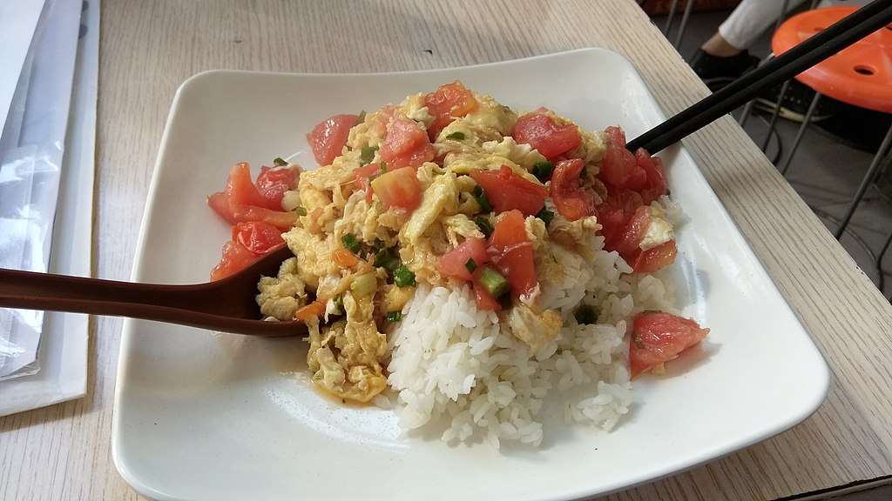

Tomato and scrambled eggs

Description:
A quick dish using tomatoes and scrambled eggs.
Adapted from a recipe by Maggie Zhu
Ingredients
- 1 and 1/2 tablespoons of vegetable oil or peanut oil
- 4 eggs, beaten
- 2 green onions, chopped
- 3 cloves garlic, chopped
- 2 cans of diced tomatoes or 4 ripe tomatoes
- 1 teaspoon soy sauce
- 1 teaspoon salt
- 1 tablespoon sugar
Optional additions
Instructions
-
Heat 1 tablespoon of oil in a medium non-stick pan over medium high heat until hot.
Add the eggs and let them sit without touching until the bottom side is done, but the top is still raw (takes around 30 seconds).
Stor with a spatula, chopping the egg into bite-sized pieces until the eggs are cooked. Transfer eggs to a plate, put aside.
-
Add 1/2 tablespoon of oil, green onions, and garlic to the pan. Stir a few times for fragrance.
Add tomatoes, stir until tomatoes are tender (around 2 minutes). Add soy sauce to the mix as well.
-
Add cooked eggs, salt and sugar. Stir everything together to mix well. Taste the sauce. Adjust the seasoning by adding more salt and/or sugar
if needed. Put everything on a big plate.
-
Serve with noodles or rice.